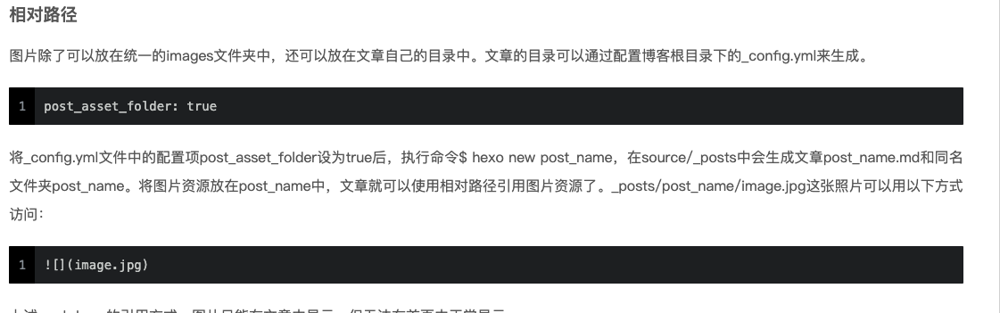

准备:
nodejs、git、npm、hexo
验证有没有敲命令，eg: npm -v，没有装先去装
npm可通过homebrew安装
brew install npmHexo安装
npm install hexo-cli -g
开始搭建博客
本地创建一个存放博客文件夹
eg: SkytechMobileBlog
切到
SkytechMobileBlog目录下执行初始化hexo init然后安装依赖
npm install生成静态文件
hexo g创建服务
hexo shexo常用命令：
命令 含义 hexo init初始化一个文件夹，它会为这个文件夹配置所有骨架 hexo g即hexo generate，生成静态文件 hexo s即hexo server，创建服务 hexo d即hexo deploy,用于将本地文件发布到github上 hexo n即hexo new,用于新建一篇文章 现在只是在本地搭建了一个技术博客，
要想把博客内容让所有人都能看到，就得借助Github了，把博客内容部署到Github上去
部署到github
- GitHub上登录/注册一个账号，创建仓库
如果是团队博客
先
New organization，再New repository（名字为xxx.github.io，xxx为organization名称）如果是个人博客：
New repository（名字为xxx.github.io，xxx为github账号）
- 博客的根目录的
_config.yml文件的底部deploy设置为：
1 | deploy: |
注意：冒号（:）后都有一个空格。你可以把此段代码复制过去，并把https://github.com/SkytechMobile/SkytechMobile.github.io.git替换为你自己的Github仓库路径
部署
根目录下执行
hexo ghexo d如果此时报错你可以输入
npm install hexo-deployer-git --save来解决以上都没什么问题的话，访 http://SkytechMobile.github.io/ 就能看到自己的博客了
主题配置
Eg: 把主题设置为next，最火的hexo的主题。
下载主题
在跟目录文件夹下输入如下命令下载next主题
git clone https://github.com/iissnan/hexo-theme-next themes/next设置主题
把
SKytechMobileBlog/_config.yml文件称为站点配置把
SKytechMobileBlog/_config.yml文件称为主题配置
下载完成后，将站点配置文件的theme字段的值改为next，重新编译并上传到Github上后，访问博客链接，你就会发现主题已经改成next了
next的默认语言为英文，你可以更改为简体中文，找到并打开站点配置文件，找到language字段，将值改为zh-Hans
- 这里介绍下
站点配置文件部分字段的含义：
1 | title: SkytechMobile团队博客 // 博客名称 |
关于写博客
一、如何新建博客
新建命令
hexo new xxx
执行上面的命令即在source/_posts/目录下新建了名为xxx的md文件和资源文件夹
二、写博客注意点
- 如何上传带图片的博客？

团队博客设置作者
可在博客md文件
分类字段设置categories：作者：Fan Chason